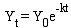
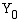
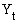
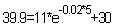
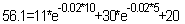

Coarse woody debris (CWD) decomposition is a process of fragmentation and mineralization. Most CWD studies use a single-exponential model to estimate CWD, which neglects most of this complexity. TIPSY also uses the single-exponential model to report cumulative volume. The model is

where

is the amount of new CWD at the start of the period,
is the amount of CWD after t years, and k is the annual decay rate constant. You can enter the decay rate constant for the model or use the default provided.TIPSY assumes that all new CWD comes in at the beginning of the period, which creates cohorts of CWD. The equation is applied to each cohort and the sum of the cohorts equals the amount of CWD at that age.
In the example below, k=0.02 and the total CWD volume at age 15 is 56.1m3.
Age |
New CWD Input |
CWD present |
5 |
11 |
11=11 |
10 |
30 |
 |
15 |
20 |
 |
Note that this example assumes no aging of CWD that fell between ages 10 and 15.
Unfortunately, TIPSY ignores the thinnings from precommercial thinning in its coarse woody debris model, but we may include thinnings in future releases. Commercial thinning will reduce the number of trees 'eligible' to become CWD.